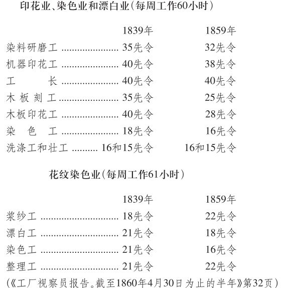
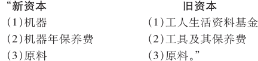
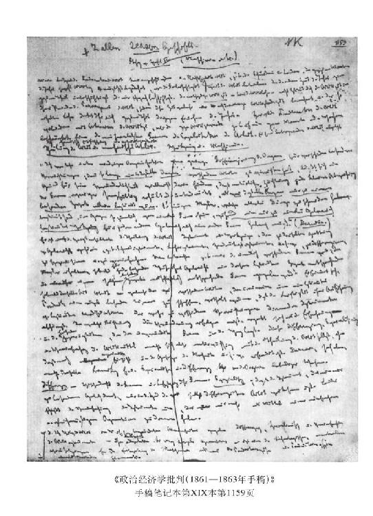

[资本主义应用机器的前提和后果]
约翰·斯图亚特·穆勒指出：
“值得怀疑的是，一切已有的机械发明，是否减轻了任何人每天的辛劳。”
[（约·斯·穆勒《政治经济学原理》（两卷集）1848年伦敦版第312页，第2版（1849年）第314页）]
他应该说：任何从事劳动的人每天的辛劳。但是，在资本主义生产的基础上，使用机器的目的，决不是为了减轻或缩短工人每天的辛劳。
“商品便宜了，但它们是人的血肉造成的。”（[约·巴·拜耳斯]《自由贸易的诡辩》1850年伦敦第7版第202页）
使用机器的目的，一般说来，是减低商品的价值，从而减低商品的价格，使商品变便宜，也就是缩短生产一个商品的必要劳动时间，但无论如何不是缩短工人从事这种变便宜的商品的生产的劳动时间。实际上，这里的问题不在于缩短工作日，而在于——凡是在资本主义基础上发展生产力的场合都是如此——缩短工人为再生产其劳动能力所必需的劳动时间，换句话说，就是缩短工人为生产其工资所必需的劳动时间，因而缩短工人为自己劳动的工作日部分，即他的劳动时间的有酬部分，并通过缩短这一部分而延长他无偿地为资本劳动的工作日部分，即工作日的无酬部分，他的剩余劳动时间。为什么随着机器的使用，侵吞别人劳动时间的贪欲到处都在增长，而工作日——在尚未受到法律的强制干预之前——不是缩短了，相反地却延长到了超过它的自然界限，不仅相对剩余劳动时间增加了，而且总劳动时间也增加了。这种现象我们将在第三章144中考察。
[V—196]145“但是，与工人人数增加的同时，工人的辛劳也增加了。现在，在制造过程中雇用的工人的劳动，是开始实行这些操作时的三倍。毫无疑问，机器完成的工作，代替了成百万人的肌肉，但是，机器也使受它可怕的运动支配的人的劳动惊人地增加了。（”阿什利勋爵《工厂十小时工作日法案。[1844年3月15日星期五在下院的]演说》1844年伦敦版第6页）
[V—190]只有在个别情况下，资本家使用机器的目的是直接降低工资，尽管在这种场合他们总是用简单劳动代替熟练劳动，用妇女劳动和儿童劳动代替成年男子劳动。商品价值取决于它所包含的社会必要劳动时间。在使用新的机器时，如果大量生产还继续以旧的生产资料为基础，资本家就可以把商品低于它的社会价值出售，虽然他是把商品高于它的个别价值出售，即高于他在新生产过程条件下制造商品所必需的劳动时间出售。因此，这里情况似乎是，对资本家说来，剩余价值来源于出售——对其他商品占有者的欺骗，来源于商品的价格哄抬得高于它的价值，而不是来源于缩短必要劳动时间和延长剩余劳动时间。但是，这不过是一种假象。由于劳动在这里获得了与同一部门的平均劳动不同的特殊生产力，它已成为比平均劳动高的劳动；例如，这种劳动的一个劳动小时等于平均劳动的四分之五劳动小时，是自乘的简单劳动。但是，资本家仍按平均劳动付给工资。因此，少量的劳动小时[在新的条件下]，等于多量的平均劳动的劳动小时。资本家对于自己的工人的劳动是按平均劳动付酬的，但是按它的实际情况，即按较高的劳动出售的，而一定数量的这种劳动等于较多的平均劳动。
因此，根据假定，为了生产同一价值，工人只需要从事比平均工人较少的时间的劳动就够了。[V—191]所以，实际上，他花费比平均工人较少的劳动时间，就生产了自己的工资的等价物，或再生产他的劳动能力所必需的生活资料。这样一来，他就把较多的劳动小时作为剩余劳动给了资本家；只有这种相对剩余劳动，才使资本家在出售商品时得到高于它的价值的价格余额。资本家只有出售时，才能实现这种剩余劳动时间，或者说，实现这种剩余价值；但是，这种剩余价值并不是来源于出售，而是来源于缩短必要劳动时间，因而相对增加剩余劳动时间。甚至当使用新机器的资本家支付的工资高于平均工资时，他能够实现超过正常剩余价值即超过同一生产部门其他资本家实现的剩余价值的余额，也只是由于工资并非按照这种劳动超过平均劳动的同一比例增加，因而剩余劳动时间总是相对增加。因此，这种情况也受剩余价值＝剩余劳动这个一般规律的支配。
机器——一旦被资本主义使用，已经不再处于其原始阶段，大部分已经不再只是比较有力的手工业工具——必须以简单协作为前提，而且简单协作（我们将会在下面看到）146对机器说来，比对以分工为基础的工场手工业来说，是一个更重要得多的因素，在工场手工业中，简单协作只表现在实行简单的倍数原则，也就是说，不仅把各种不同的操作分配给各种不同的工人，而且也有人数比例，即把一定数量的小组工人分配到各种操作上，而每一个这样的小组工人都从属于某一种操作。
在资本主义使用机器的最发达的形式即机械工厂中，主要的是许多人在那里制作同一的产品。这甚至是它的基本原则。其次，机器的使用最初是把以分工为基础的工场手工业作为自己存在的先决条件的；因为机器本身的制造——从而机器的存在——是以充分实行分工原则的工场为基础的。只有在进一步发展的阶段，机器本身的制造才在采用机器的基础上——在机械工厂中完成。
“在力学发展的早期阶段，机器制造厂展示了有许多等级的分工；锉刀、钻头、车床各有其相应技能的工人。但是，使用锉刀和钻头的工人的技能现在却被刨床、切槽床和钻床所代替，而切削金属的车工的技能却被自动车床所代替。”（尤尔[《工厂哲学》]第1卷第30—31页）
一方面，工场手工业中发展起来的分工在机械工厂内部重新出现，虽然规模很小；另一方面，我们在下面将会看到，机械工厂又把以分工为基础的工场手工业的最重要的原则废除了。147最后，机器的使用扩大了社会内部的分工，增加了特殊生产部门和独立生产领域的数量。
使用机器的基本原则，在于以简单劳动代替熟练劳动，从而也在于把大量工资降低到平均工资的水平，或把工人的必要劳动减低到平均最低限度和把劳动能力的生产费用减低到简单劳动能力的生产费用的水平。
[V—192]通过简单协作和分工来提高生产力，资本家是不费分文的。它们是资本统治下所具有的一定形式的社会劳动的无偿自然力。应用机器，不仅仅是使与单独个人的劳动不同的社会劳动的生产力发挥作用，而且把单纯的自然力——如水、风、蒸汽、电等——变成社会劳动的力量。这里已不用说在机器的真正工作部分（即直接用机械或化学方法加工原料的部分）中起作用的力学定律的运用了。但是，上述增加生产力，从而[缩短]必要劳动时间的形式的特点在于，所使用的单纯自然力的一部分，在它被使用的这一形式上是劳动产品，例如把水变成蒸汽时就是这样。在动力，例如水，是自然形成的瀑布等等的地方〔顺便指出，最能说明问题的是，法国人在18世纪使水产生水平作用，而德国人则总是造成人工落差〕，148把水的运动传到机器本身的媒介，例如水轮，就是劳动产品。而直接加工原料的机器本身也完全是这样。
因此，机器与工场手工业中的简单协作和分工不同，它是制造出来的生产力。机器具有价值；它作为商品（直接作为机器，或间接作为必须消费掉以便使动力具有所需要的形式的商品）进入生产领域，在那里，它作为机器，作为不变资本的一部分而起作用。机器和不变资本的任何部分一样，把它本身包含的价值加到产品上，也就是说，它使产品由于加进生产它本身所需要的劳动时间而变贵。
因此，虽然我们在本章中专门考察可变资本和它自身赖以再生产的那个价值量之间的比例，换句话说，就是耗费在某一生产领域内的必要劳动和剩余劳动之间的比例，因而我们有意识地不考察剩余价值和不变资本以及和预付资本总额之间的比例；但是，机器的应用，迫切要求在考察用于工资的那部分资本的同时，也考察资本的其他部分。的确，下述原则，即使用提高生产力的手段能使相对剩余时间增加，从而也使相对剩余价值增加的原则的依据是，由于应用了发明，使生产力提高了，即同等人数的工人在同一时间内生产了更多的使用价值，这样商品变便宜了，因而劳动能力再生产所必需的劳动时间缩短了。但是，在采用机器的情况下，取得这样的结果，只是靠更大量的投资，靠消费已有的价值，靠加进某种[新的]因素，因而，这种因素按自己本身的价值额增加了产品即商品的价值量。
首先，拿原料来说，自然，无论用什么方法对它进行加工，它的价值仍然和原来一样，也就是说，仍然和它进入生产过程时的价值一样。
[V—193]其次，使用机器会使一定量原料所吸收的劳动量减少，或使在一定劳动时间内转化为产品的原料数量增加。
如果考察一下这两个因素，那么，用机器生产的商品所包含的劳动时间少于不用机器生产的商品，它代表较小的价值量，它比较便宜。但是，这种结果，只有通过商品——以机器形式存在的商品，这种商品的价值加进产品中去——的工业消费才能够达到。
可见，不管是否使用机器，原料的价值仍然不变，而一定量原料转化为产品，从而转化为商品所需的劳动时间，随着机器的使用而减少了，因此，用机器生产的商品变便宜，只取决于唯一的一种情况：机器本身包含的劳动时间，少于它所代替的劳动能力所包含的劳动时间；进入商品[价值]的机器的价值，要小于（即等于较少的劳动时间）它所代替的劳动的价值。而这后一种价值等于劳动能力的价值，它的使用量由于应用机器而减少了。
随着机器脱离自己的幼年时期，在规模上和性质上不同于它们最初所代替的手工业工具，它们日益增大和昂贵，需要更多的劳动时间来进行自身的生产，提高了自己的绝对价值，虽然相对说来，它们变得便宜，就是说，效率高的机器按它的功效来算比效率低的机器便宜，也就是说，生产机器本身所花费的劳动时间量在增长程度上远远小于它所代替的劳动时间量。但是，无论如何，它的绝对价值却不断提高，因而它把绝对增大的价值加进了它所生产的商品，特别是同手工业工具，或者，甚至同机器在生产过程中所代替的简单的和以分工为基础的工具相比较。
因此，要使借助于较昂贵的生产工具生产的商品，比不用这种工具生产的商品较为便宜，要使机器本身包含的劳动时间少于它所代替的劳动时间，就需要具有两个条件：
（1）随着机器功效的增长，随着它把劳动生产力提高到使一个工人可能完成许多工人的工作的程度，用机器在同一劳动时间内生产的使用价值的量，从而商品的量，也增加了。因此，再现机器的价值的商品的量增加了。
机器的总价值只是在机器作为劳动资料参加生产的那些商品的总量中再现出来。这种总价值在单个商品之间分为相应的部分，单个商品的总和构成商品的总量。因此，这个商品总量越大，在单个商品中再现出来的机器价值部分就越小。尽管机器同手工业工具或简单劳动工具之间存在着价值差额，但是，由于机器价值分到产品即商品的一个更大的总量上，加进商品中的机器价值部分，就相应地小于机器所代替的劳动工具和劳动能力的价值部分。
花费同一劳动时间将1 000磅棉花加工成棉纱的纺纱机，再现在1磅棉纱中的只是它的价值的1/1000，而如果在同一时间内，它只能将100磅棉花加工成棉纱，那么在1磅棉纱中再现出来的，是它的价值的1/100。所以，在后一种情况下，1磅棉纱本身比在前一种情况下包含的劳动时间多9倍，价值大9倍，贵9倍。[V—194]因此，只有在可以大批生产即大规模生产的条件下，机器才能（在资本主义的基础上）得到应用。
[V—201]149“只有在使各个小组的工人都能充分工作并带来巨大成果的企业中，才有可能实行分工和使用大功率的机器。企业生产的产品数量越大，用于工具和机器的相应支出就越小。如果两台功率相同的机器在同一段时间内进行生产，一台生产10万米布，而另一台生产20万米同样的布，那么，可以说，第一台机器比第二台机器昂贵一倍；第一类企业使用的资本比第二类企业多一倍。”（罗西《政治经济学教程。1836—1837年讲授》，[载于《政治经济学教程》1843年布鲁塞尔版]第334页，[Zh.68]）
[V—194]（2）早在以分工为基础的工场手工业中，也和在手工业等中一样，劳动工具（以及劳动条件的其他部分，例如建筑物）是全部地进入劳动过程，或者作为劳动资料直接进入劳动过程，或者作为完成劳动过程所需要的劳动条件（例如建筑物）间接进入劳动过程。但是，这些劳动工具只是部分地进入价值增殖过程，也就是说，只有它们在劳动过程中被用掉的那一部分进入价值增殖过程；它们的交换价值是同它们的使用价值一起在劳动过程中被耗费的。它们的使用价值作为劳动资料全部进入劳动过程，但是，它们的使用价值在一个时期内仍然保存下来，这个时期包括一系列劳动过程，它们在这些劳动过程中反复地为生产同一种商品服务，也就是作为新的劳动的劳动资料不断反复地为加工新的材料服务。作为这种劳动资料的劳动工具的使用价值，只有在这种或长或短的持续时期的末尾才被耗费掉；在这个时期内，同一劳动过程不断反复出现。因此，劳动工具的交换价值只有在商品总量中才全部再现出来，劳动工具从进入劳动过程到离开这个过程的整个时期都是为生产这些商品服务的。所以，加进每一单个商品中的，只是劳动工具价值的一定的相应部分。如果一种工具能用90天，那么，每一天所生产的商品中再现出来的就是这个工具价值的1/90。在这里，有必要在想象中进行某种平均计算，因为工具价值只有在它被全部耗费掉的那些劳动过程的整个时期内才能完全再现出来，因而，工具的全部价值只有在工具参加这个时期生产的商品总量中才能完全再现出来。因此，要计算出，工具的使用价值平均每天都有多大的相应部分被耗费（这是假定），也就是说，在这一天生产的产品中再现出工具价值的多大的相应部分。
由于使用机器，劳动资料具有巨大的价值量，而且表现为庞大的使用价值，劳动过程和价值增殖过程之间的上述差别日益增大，并且成为生产力发展和生产特点中的一个重要因素。例如，在安装着能使用12年的机械织机的工厂中，机器等的磨损在一天的劳动过程中是很小的；因此，在单个商品或者甚至在全年的产品中再现出来的机器价值部分，相对来说也是很小的。在这里，过去的对象化劳动大量地进入劳动过程，而资本的这部分只有相对来说很小的一部分在这个劳动过程中耗费掉了，即进入价值增殖过程，因而作为价值的一部分再现在产品之中。因此，不论进入劳动过程的机器以及同它一起被利用的建筑物等等所表现的价值量多么大，同这个价值总量相比，其中进入每天的[V—195]价值增殖过程，从而进入商品价值的那个部分相对来说是很小的；它使商品相对地变贵，但并不显著，而且比机器所代替的手工劳动使商品变贵的程度要小得多。所以，同样，不论用于机器的资本部分，和用于把这些机器作为生产资料使用的活劳动的资本部分相比是多么大，如果把再现在单个商品中的机器价值部分，和同一商品消耗掉的活劳动相比，这个比例仍然是很小的。机器和劳动加进单个产品中的价值部分，和原材料本身的价值相比，也是很小的。
只有使用机器，大规模的社会生产才有力量使代表大量过去劳动的产品（即巨大的价值量）全部进入劳动过程；使它们作为生产资料全部进入劳动过程；而进入在单个劳动过程内进行的价值增殖过程的，只是它们的相应的较小部分。以这种形式进入每一个单独的劳动过程的资本是大量的，但是在这个劳动过程中它的使用价值被消耗和用掉的部分，从而应该补偿的价值部分，是比较小的。机器作为劳动资料是全部地发挥作用，但是，它加进产品的价值只是它在劳动过程中丧失的那一部分，而丧失的这种价值取决于机器的使用价值在劳动过程中磨损的程度。
可见，要使较昂贵的工具生产的商品比那种较便宜的工具生产的商品便宜，或者说，要使机器本身包含的价值小于它所代替的劳动能力的价值，就要具备（1）和（2）两项所列举的[机器的资本主义应用的]条件，这些条件可归结为以下要求。第一个条件——这就是大批生产；它取决于一个工人在同一劳动时间内能够生产的商品数量比他不使用机器所生产的商品数量大多少；换句话说，取决于机器取代劳动达到何等程度；即取决于用于生产既定数量产品的劳动能力的数量是否已缩减到尽可能达到的程度，机器是否已代替了尽可能大量的劳动能力，以及用于劳动的资本部分是否比用于机器的资本部分相对地小。第二个条件是，不论包含在机器中的资本部分多么大，再现在单个商品中的机器价值部分，即机器加进单个商品的价值部分，仍比包含在同一商品中的劳动和原材料的价值部分小；这是因为在某一既定的劳动时间内，机器是全部地进入劳动过程，但它进入价值增殖过程的，却只是比较小的部分。机器全部地进入劳动过程，但[进入价值增殖过程的]，始终只是机器总价值的某一相应部分。
因此，必须修正李嘉图的下列批判：
“李嘉图说，‘机器制造工人制造机器时耗费的劳动的一部分’，包含在例如一双袜子上。可是制造每一双袜子的全部劳动——如果我们说的是一双袜子——，包含机器制造工人的全部劳动，而不只是他的一部分劳动。因为，虽然一台机器织出许多双袜子，但是缺少机器的任何一部分，连一双袜子也织不出来。”（《评政治经济学上若干用语的争论》1821年伦敦版第54页，[Zh.13]）
[V—196][在使用机器时]用于原材料的资本部分，同用于工资的资本部分相比，比在简单分工时增长得无比迅速。此外，这里还要加上用于劳动资料、机器等等的新的和较大的资本量。因此，随着工业的进步，资本的辅助部分150与它用于活劳动的那一部分成比例地同时增长。
[V—197]当新机器在使用它的生产部门占统治地位以前，采用新机器的初步结果之一是，延长那些仍然使用旧的不完善的生产资料从事劳动的工人的劳动时间。尽管用机器生产的商品是高于自己的个别价值，即高于它本身包含的劳动时间量出售的，但仍然是低于同类产品过去的、社会的、一般的价值出售的。由此可见，减少了的是生产这种特定商品的社会必要劳动时间，而不是那些使用旧生产工具劳动的工人的劳动时间。因此，如果[现在]再生产出这种工人的劳动能力需要10小时的劳动时间，那么，他在10小时内生产的产品已不再包含10小时的必要劳动时间（即在新的社会生产条件下制造这个产品所需要的劳动时间），而可能只包含6小时。因此，如果他劳动14小时，那么，他这14小时就只代表10小时必要劳动时间；在这14小时内，只有10小时必要劳动时间得到实现。所以，他的劳动产品也只具有10小时一般的社会必要劳动的产品的价值。如果工人独立地劳动，他就必须延长自己的劳动时间。如果他作为雇佣工人，从而必须提供剩余时间，那么，凡是在延长绝对劳动时间的情况下，资本家所以能够取得平均剩余劳动，只是由于工人的工资降低到过去的平均水平以下，这就是说，在工人的已经增加的劳动时数内，他自己占有的部分更小了，这并不是因为他的劳动效率提高，而是因为效率变得更低；不是因为工人在较少的劳动时间内制造出同量的产品，而是因为归他所有的那一部分产品的数量减少了。
资本通过使用机器而产生的剩余价值，即剩余劳动，——无论是绝对剩余劳动，还是相对剩余劳动，并非来源于机器所代替的劳动能力，而是来源于机器使用的劳动能力。
“根据贝恩斯的计算，建成一座头等棉纺厂，并装备机器、蒸汽机和煤气锅炉，用款少于10万镑是不行的。一台100匹马力的蒸汽机带动5万个日产62 500英里的细棉线的纱锭。在这种工厂中，1 000个工人纺出的棉线相当于不使用机器的25万个工人所纺出的棉线。”（赛·兰格《国家的贫困》1844年伦敦版第75页，[Zh.23]）151
在这种情况下，[用于一个工人的]资本的剩余价值不是来源于被节省下来的250个工人的劳动，而是来源于代替他们的一个工人的劳动；不是来源于被代替的25万个工人的劳动，而是来源于1 000个在业工人的劳动。实现在剩余价值中的正是他们的剩余劳动。机器的价值并不是由机器的使用价值（它代替人的劳动就是它的使用价值）决定的，而是由生产机器本身所必需的劳动决定的。机器在它被使用以前，在它进入生产过程以前具有的这种价值，是它作为机器加进产品的唯一的价值。资本家购买机器时支付的，就是这种价值。
假定商品按照自己的价值出售，那么，资本通过机器和通过使用可提高劳动生产力，从而降低单个产品价格的一切其他组合所创造的相对剩余价值，就仅仅在于劳动能力再生产所必需的商品变便宜了，因此，劳动能力再生产所需要的劳动时间，即只是作为包含在工资中的劳动时间的等价物的劳动时间缩短了，从而[V—198]在同样长的总工作日内，剩余劳动时间延长了（在这方面还有一些引起变化的情况，将在下面谈到）。上述必要劳动时间的缩短，其结果是有利于整个资本主义生产，并且普遍地减少劳动能力的生产费用，因为，根据假定，机器生产的商品总是进入劳动能力的再生产。但是，这一点，即没有给资本家个人带来特殊利益的一般的结果，对于资本家来说，并不是促使他使用机器的动机。
第一，机器的应用，不论是代替了手工业生产（例如在纺纱业方面），从而首先使某种工业部门受资本主义生产方式的支配，还是使从前只是以分工为基础的某种工场手工业发生革命（如像在机器制造厂中那样），最后，也不论是用更完善的机器把以前的机器排挤掉，还是将机器的应用推广到某一个工厂中以前未采用机器的局部操作上，——在所有这些情况下，正如上面所指出的，机器的应用，使仍旧受旧生产方式支配的工人的必要劳动时间延长了，也使他们的总工作日延长了。
但是，另一方面，机器的应用，却使新采用机器的工厂中的必要劳动时间相对地缩短了。如果在采用机械织机以后，手工织工的两个劳动小时，只等于社会必要劳动的一个小时，那么，现在，在还没有普遍采用机械织机织布以前，使用这种织机的织工的一个劳动小时，将会大于必要劳动的一个小时。它的产品比一个劳动小时的产品具有更高的价值。这就等于简单劳动自乘了，即在这种劳动中实现了更高质量的织布劳动。这种情况是发生在下面这个范围内的：采用机械织机的资本家，尽管出售一个小时的产品时低于从前一个劳动小时的水平，低于它以前的社会必要价值，但却高于它的个别价值，即高于他自己用机械织机制作这种产品所必需耗费的劳动时间。因此，工人为了再生产自己的工资，只要从事较少时数的劳动就够了；他的必要劳动时间随着他的劳动在同一部门中成为较高质量的劳动而按同一程度缩短了；因此，他的一劳动小时的产品出售时，就可能高于旧生产方式仍占统治地位的工厂中两小时劳动的产品。因此，如果一个正常的工作日保持不变，还是那样长，那么，在这里，剩余劳动时间就增加了，因为必要劳动时间缩短了。甚至在工资提高时，也会发生这样的情况，但始终必须假定，在新的情况下，工人为了补偿自己的工资，或再生产自己的劳动能力，不需要耗费和从前同样大的相应的工作日部分。当然，这种必要劳动时间的缩短，只是暂时的，一旦机器在这个部门普遍应用，使得商品价值重新归结为商品中包含的劳动时间，这种情况也就消失了。但是，这样同时又刺激资本家采用日益翻新的小改进，使他使用的劳动时间高于同一生产领域内的一般必要劳动时间的水平。无论在什么生产部门使用机器，并且不管机器生产的商品是否进入工人自身的消费，情况都是这样。
第二，从普遍的经验中可以知道，一旦机器开始被资本主义应用——即一旦机器摆脱它们最初在许多部门出现时所处的发展的幼年阶段，在这个阶段，它们只是旧的手工业工具的效率较高的形式，不过，后者在旧的生产方式下还是[V—199]由独立的工人及其家庭来使用的——，一旦这些机器作为资本的形式成为同工人对立的独立的权力，绝对劳动时间即总工作日，不是缩短，而是延长了。我们将在第三章144中考察这种情况。但在这里应该指出其要点。在这里必须把两个因素区别开来。第一：工人所处的、而且使得资本家有可能强制延长劳动时间的新条件。第二：促使资本这样做的动机。
关于第一点。首先——劳动形式改变了，劳动看来很容易，工人的全部肌肉力以及技能都转移到机器上了。由于肌肉力的减轻，劳动时间的延长起初在体力上还不是不可能的。而由于工人的技能已转移到机器上，工人的反抗遭到破坏，现在工人失去了在工场手工业条件下还占支配地位的技能，他们不能奋起抵抗，而资本则能以非熟练的，因而也更受它支配的工人来代替熟练工人。其次，现时作为一个决定性因素进入[生产过程]的新的一类工人，改变了整个工厂的性质，而且就其天性来说，在资本的专制面前是比较顺从的。这个因素就是女工和童工。一旦工作日由于习惯被强制延长，那就会像在英国一样，要经历几代人的时间，工人才能重新把工作日恢复到正常界限。因此，把工作日延长到超过它的自然界限——夜工，是工厂制度的结果。
“很明显，劳动时间长，是因为从全国各地〈贫民习艺所〉获得了大量无家可归的儿童，这使工厂主可以不依赖于工人。工厂主就是靠这样搜罗来的可怜的人身材料延长劳动时间。一旦长时间劳动成为习惯，他们也就能更加容易地把这种长时间劳动强加在他们的邻人身上。”（约·菲尔登《工厂制度的祸害》1836年伦敦版第11页，[Zh.23]）
“‘工厂主伊先生对我说，他只使用妇女来操纵他的机械织机，这是到处都可以看到的。他喜欢使用已婚的妇女，特别是必须养家糊口的妇女；这种妇女比未婚的妇女更专心更听话，她们不得不尽最大努力去取得必要的生活资料。’这样一来，美德，女性特有的美德，反而害了她们自己，她们的恭顺温柔的天性，竟成为使她们受奴役和受苦难的根源。”（阿什利勋爵《工厂十小时工作日法案。[1844年3月15日星期五在下院的]演说》1844年伦敦版第20页）
上述引文的作者菲尔登说：
“随着机器的改进，工厂主的贪欲使得他们中间的许多人要求自己的工人付出比他们可能承担的更多的劳动。”（同上，第34页，[Zh.23]）
对别人劳动（剩余劳动）的贪欲，并不是使用机器的人的独特本性，它是推动整个资本主义生产的动机。因为现时工厂主正处于追求这种欲望的有利地位，所以他们贪得无厌，是很自然的。还必须指出以下一点：动力，如果它来源于人（甚至来源于牲畜），那么，从身体上说只能在一天的一定时间内发挥作用。蒸汽机等则不需要休息。它在任何时间都可以工作。
但是，这里还应加上在采用机器的情况下特别刺激上述欲望的特殊情况。
[V—200]机器等等在一段较长的时期内实现自身的价值，在这个时期内，为了生产新的商品，同一劳动过程不断地反复进行。这个时期是根据对机器总价值向产品转移所作的平均计算来确定的。通过把劳动时间延长到超过正常工作日的界限，就可以缩短用总产品补偿投在机器上的资本的时期。假定按每天劳动12小时计算，这个时期是10年。如果工人每天劳动15小时，即工作日延长1/4，那么，一周就延长了工作日的1(1/2)，即18个劳动小时。按照假定，一周包含90个劳动小时；18/90是一周的1/5。这样一来，10年就可以节省1/5即2年。因此，投在机器上的资本经过8年就可以得到补偿。如果在这个时期内，机器实际上已损耗，那么，再生产过程就会加速；如果不是这样，而机器还能使用，那么，可变资本同不变资本的比率就会增大，因为后者继续进入劳动过程，但是不再进入价值增殖过程。因此，即使剩余价值没有增加（由于延长劳动时间，它一般来说已经增加），这种剩余价值同投资总额的比率，即利润[率]也增加了。这里还应当加上这样一种情况：在采用新的机器时，会不断地进行改良。因此，在机器的周转期结束之前，即它们的价值再现于商品价值之前，往往是大部分旧机器或者部分地贬值，或者变得完全无用。它们的再生产时期越短，这种危险就越小，资本家就越是能够在较短的时期内收回机器的价值之后，使用新的改良的机器，并廉价出售旧机器，而别的资本家使用这种旧机器仍有利可图。因为它从一开始就作为一个较小的价值量进入他的生产。（关于这一点，在探讨固定资本时，还要更详尽地考察，也要引用拜比吉的例证。）152
以上所述，不仅适用于机器，而且也适用于作为使用机器的结果和条件的全部固定资本。
但是，对资本家说来，问题决不是单纯地为了要尽可能快地收回投入固定资本的价值量，防止它贬值以及重新使它处于可供支配的形式，而首先是使用这种资本来赢利——这种数量很大的资本采取了这样的形式：一旦资本与活劳动的接触中断（对活劳动来说，它就是固定资本），它作为交换价值就会损失，而作为使用价值就变得无用。由于投入工资的资本部分同总资本，尤其是同固定资本相比大大减少，由于剩余价值量不仅取决于剩余价值率，而且取决于同一时间内使用的工作日日数，而利润取决于这种剩余价值和总资本的比率，因此利润率就下降了。当然，制止这种下降的最简单的方法，就是通过延长工作日，来尽可能地延长绝对剩余劳动，从而把固定资本变为获取最大限度的无酬劳动量的手段。如果一个工厂停止生产，那么，工厂主就认为工人偷窃了他的东西，因为在固定资本中他的资本取得了直接索取他人劳动的形式。所有这一切，西尼耳先生曾十分天真地表达过。他早在1837年就认为，[V—201]随着机器生产的发展，工作日——因而绝对劳动时间——必须不断增长。
西尼耳在引用尊敬的权威人士阿什沃思的话时说：
“世界各地的棉纺织厂和其他企业之间到处存在的劳动时间的差别，来源于两个原因：（1）固定资本大大超过流动资本使长的工作日成为合乎愿望的事情。”（纳·威·西尼耳《关于工厂法对棉纺织业的影响的书信》1837年伦敦版第11页，[L.XI，4]）
随着固定资本同流动资本相比的不断增加，
“延长劳动时间的动机也就增强，因为这是使大量固定资本带来利润的唯一手段。阿什沃思先生告诉我：‘一个农夫放下自己的铁锹，他就使一笔18便士的资本在这个时期内变成无用的东西。我们的人有一个离开工厂，他就使一笔值10万镑的资本变成无用的东西’”（同上，第14页）。153
工人使资本变成无用的东西！要知道，机器之所以存在，在机器上之所以投入这样大量的资本，恰恰是为了通过这一资本来榨取工人的劳动。工人一离开厂房，实际上就是对价值10万镑的资本犯了大罪。
因此，最初实行了夜工，后来“我们的工厂通常每周开工80小时”（[L.XI,5, Zh.23]）。
“一台蒸汽机或别种机器，每天只工作几小时或每周只工作几天，这就损失了功率。如果它们整个白天工作，那就会生产得多一些；如果日夜生产，就会生产得更多。”（让·古·库尔塞尔—塞讷伊《工商企业、农业企业的理论和实践概论》1857年巴黎第2版第48页）
“生产网布的第一批机器很昂贵，最初的售价是1 000镑到1 200镑[或1 300镑]。这些机器的所有主认为，机器生产的产品是多些，但是因为工人的劳动时间限定为8小时，所以他们在产品的价格方面不可能同旧的生产方式竞争。这个缺点是由于最初购置机器时花费了大量资本造成的。但是，工厂主很快就发现，只要使用原来的同一资本，而稍微增加一点流动资金，他们就能使这些机器一昼夜工作24小时。”（拜比吉[《论机器和工厂的节约》1833年巴黎版]第279页）
[V—206]“不言而喻，在行情涨落不定，需求时高时低的情况下，经常会出现这样的时机：工厂主不增加固定资本，也能使用更多的流动资本……不增加建筑物和机器的开支， 也能加工更多的原材料。”（罗·托伦斯《论工资和联合》1834年伦敦版第64页）154
总之，延长劳动时间的好处就在于：节约了用于建筑物和机器的追加开支。
[V—201]第三，一旦机器的应用缩短了生产同一商品的劳动时间，就会使这个商品的价值减少，使劳动效率更高，因为这一劳动在同一时间内提供的产品量更多了。在这种情况下，机器只影响正常劳动的生产力。而一定量的劳动时间仍然表现在同一个价值量上。所以，一旦竞争把用机器生产的商品价格降低到它的价值水平，机器的应用所以能够增加剩余价值即资本家的[V—202]利润，只是由于商品变便宜而使工资价值或劳动能力价值即再生产劳动能力所必需的时间减少了。
但是，这里还有一种情况，在这种情况下，甚至不延长工作日，使用机器就可以增加绝对劳动时间，从而增加绝对剩余价值。这是通过所谓浓缩劳动时间的办法来实现的，这时，每一分一秒都充满了更多的劳动；劳动强度提高了。由于采用机器，不仅劳动生产率（从而劳动质量）提高了，而且在一定时间内消耗的劳动量也增加了。时间的间隙由于所谓劳动紧凑而缩小了。因此，一个劳动小时所提供的劳动量，可能等于完全不使用机器或使用不那么完善的机器的平均劳动条件下的6/4个劳动小时的劳动量。
在已经采用机器的地方，由于对机器进行改良，同所生产的商品量和同所使用的机器数量相比，工人人数减少了，而与此同时，在使用已改良的机器的情况下，代替一个或两个工人的一个工人的劳动增加了，也就是说，只有在机器迫使工人增加自己的劳动和使他每一分一秒更紧张地劳动时，才能使一个工人完成以前两个或三个工人所完成的工作。因此，在同一劳动小时内，劳动能力被更快地消耗掉了。
首先让我们看一看，工厂工人状况报告的起草者们在各个不同时期关于劳动量随机器的改良而增加这一点说了些什么。劳动的这种增加，一方面是由于工人必须跟上机器的更快的速度；另一方面是由于单个工人必须看管的机器作业量增大了，例如，走锭精纺机的纱锭数增加了，再加上使用的是双排纱锭，或者，一个织布工人要看管的不是一台而是两台或三台机械织机。
“同30年或40年以前比较，现在工厂中的劳动大大加重了，因为让儿童照看的机器速度的大大加快要求工人更加注意，更多地活动。”（约·菲尔登《工厂制度的祸害》1836年伦敦版第32页，[Zh.23]）
这是1836年的情况。约翰·菲尔登本人就是工厂主。
阿什利勋爵（现在是舍夫茨别利伯爵）在他于1844年3月15日所作的关于十小时工作日法案的演说中确认：
“现在，在制造过程中雇用的工人的劳动，是开始实行这些操作时的三倍。毫无疑问，机器完成的工作，代替了成百万人的肌肉；但是，机器也使受它可怕的运动支配的人的劳动惊人地增加了。”（同上，第6页）“1815年，工人——按12小时工作日计算——来回看管两台纺40支纱的走锭精纺机，必需步行8英里。1832年，在12小时内看管两台纺同样支纱的走锭精纺机所走的距离等于20英里，并且往往还要多。但是，照看走锭精纺机的工人所消耗的劳动量，不仅限于行走。他们还要做许多事情。1835年，一个纺纱工人每天在每台走锭精纺机上牵伸820次；一个工作日看管两台走锭精纺机的牵伸总数是1 640次。1832年(1)，一个纺纱工人在每台走锭精纺机上牵伸2 200次，合计是4 400次；1844年根据有经验的纺纱工人提供的报告，一个工人在同一段时间内在每台走锭精纺机上牵伸2 400次，合计[V—203]每个工作日内牵伸4 800次，有时，需要的劳动量还要大。”（[同上，]第6—7页）
“我这里有一份22个曼彻斯特纺纱工人签名的文件，他们证实20英里是他们必需步行的最低限度的距离，同时他们断言，这一距离通常还要大得多。我手头另有一份1842 年。向我提供的文件……证明劳动累进地增加；它的增加，不仅是因为步行的距离加大了，而且还因为生产的商品数量增加了，而人手的数量相应地减少了；此外，还因为现在纺的往往是较次的棉花，加工起来更困难。”（同上，第8—9页）
“在梳棉间，劳动量也大大增加了；现在，一个人要干以前由两个人分担的活。织布间雇用的工人很多，而且多半是妇女……在这里，近年来由于机器速度的提高，劳动量增加了整整10%。1838年，每周纺纱18 000绞；1843年达到21 000绞。1819年，机械织机每分钟打梭60次，1842年是140次，这说明劳动大大增加了，因为现在对所完成的工作要更加细心和更加注意。”（同上，第9页）
〔当机器使某个工厂主有可能高于商品的个别价值出售自己的商品时，下面这种说法（即说明甚至在这时剩余价值也是来自必要劳动时间的缩短，它本身是相对剩余价值的一种形式）也是适用的：
“一个人的利润，不是取决于他对别人的劳动产品的支配，而是取决于他对这种劳动本身的支配。”“在工人的工资不变的情况下，如果他能以较高的价格〈提高商品的货币价格〉出售他的商品，显然，他就会从中获得利益，而不管其他商品是否涨价。他只要用他的产品的较小部分，就足以推动这种劳动，因而更大部分的产品就留给他自己了。”（《政治经济学大纲》1832年伦敦版第49—50页）（此书作者是马尔萨斯主义者155。）〕
工厂视察员报告表明，在（截至1860年4月为止）受工厂法约束的、从而每周工作时间依法缩短到60小时的工业部门中，工资不是降低而可以说是提高了（如果以1859年同1839年相比）；而在下述工厂中工资无疑降低了，在这些工厂里当时
“儿童、少年和妇女的劳动尚未受到限制”。
这里指的是
“印花厂、漂白厂和染厂中的情况，直到1860年，这些工厂的工作时间仍然和20年以前一样，这些工厂的受工厂法保护的工人往往被迫一天劳动14或15小时”。(2)
在第一类[受工厂法约束的]工厂中，生产比以前在相当大的程度上扩大了，同时，工厂主的利润也增加了，工厂的迅速发展就是证明。
“各种机器的巨大改进，大大提高了它们的生产力。毫无疑问，工作日的缩短推动了这种改进，特别是在既定时间内提高机器速度方面。这种改进以及工人劳动的紧张程度的加强，使得……在较短的时间内完成的工作量和以前在较长时间内完成的工作量一样多。”（《工厂视察员报告。截至1858年10月31日为止的半年》第10页。并参看《工厂视察员报告。截至1860年4月30日为止的半年》第30页及以下几页）

[V—204]尽管十小时工作日法案缩短了工作日，却没有减少英国工厂主的利润，这种现象是由两个原因造成的：
（1）因为英国的一个劳动小时超过了大陆的一个劳动小时，前者是比后者更复杂的劳动，也就是说，英国工厂主同别国工厂主的关系，就像采用新机器的工厂主同自己的竞争对手的关系一样。
“在其他条件相同的情况下，同别国工厂主相比，英国工厂主在一定时间内所能得到的劳动量要多得多，以致英国每周总计60小时的工作日抵得上别国72 —80小时的工作日。而且英国的运输工具使工厂主几乎在厂内就可以把商品交给铁路托运，在厂内几乎就可以直接装船出口。”（《工厂视察员报告。截至1855 年10月31日为止的半年》1856年伦敦版第65页）
（2）因缩短绝对劳动时间而造成的损失，通过劳动时间的浓缩得到了补偿，所以，现在一个劳动小时实际上等于6/5个劳动小时，或者还要多些。正如工作日的绝对延长超出一定界限（工作日的自然界限）就会遇到自然障碍一样，浓缩的工作日也有自己的界限。因此，现在工厂在十小时工作日法案约束下所实现的劳动量，能否在比如说十二小时工作日中始终以相同的劳动强度提供出来，那是大可怀疑的。
“事实上，有一类工厂主，”
（不愿意在本厂使用两班各工作半日，即6小时的13岁以下的童工。）
“毛纺业主，现在很少使用13岁以下的童工即半日工。他们采用了各种改良的和新式的机器，因而使雇用童工成为完全多余的了。我可以举一个例子来说明：把一种叫捻线机的装置同现有的机器连接起来，由6个或4个（根据每台机器的性能而定）半日工去做的工作，现在可由一个少年去完成了…… 半日制在一定程度上刺激了捻线机的发明”（《工厂视察员报告。截至1858年10月31日为止的半年》1858年伦敦版第42—43页）。
不管怎样，缩短绝对劳动时间的这一结果向我们表明，工厂主怎样想方设法延长相对剩余劳动时间和缩短必要劳动时间。同时，它还向我们表明，机器不仅使单个工人有可能完成许多工人的劳动，而且还把他必须完成的劳动量增大了，这就使他的劳动小时具有较高的价值，并从而相对地减少了工人自身为再生产自己的工资所需要的劳动时间。
[V—205]如上所述，这是通过提高机器的运转速度和增加单个工人必须看管的工作机的台数而实现的。这部分地又是靠改变产生动力的机器的结构达到的，由于这种改变，重量相等的机器在费用相对减少，甚至往往是绝对减少的情况下，可以推动更多的机器，并且速度也更快了。
“因此，官方报告揭露的事实证明：工厂制度在急剧扩展；虽然按马力计算需要同过去一样的人手数量， 但同机器比较起来， 人手数量减少了；由于力的节省和通过其他方法，蒸汽机可以推动更重的机器；由于工作机的改良、制造方法的改变、机器速度的提高以及其他许多原因，完成的劳动量增加了。”（《工厂视察员报告。截至1856年10月31日为止的半年》第20页）
“霍纳先生在他的截至1852年10月为止的报告中……摘引了曼彻斯特附近帕特里克罗夫特的著名土木工程师詹姆斯·内史密斯的来信，信中解释了蒸汽机最新改良的性质，由于这些改良，同一发动机在燃料消耗减少的情况下可以做更多的功…… 并且在这封信里说：‘不大容易提供确切的材料，来说明同一些发动机经过某些改良或全部改良后所做的功增加的情况。但是我确信，如果能够得到确切的报告，那么，结果将会表明，由蒸汽机推动的并且重量和过去相同的机器，现在比以前平均至少多做50%的功…… 在许多场合，同一些蒸汽机，在速度限为每分钟220英尺的时候，提供50马力，现在则提供100马力以上。’”
霍纳（《截至1856年10月31日为止的半年的报告》）指出：“在1838年的报告中，列举了蒸汽机和水轮机的数目及其马力。那时所列的数字对于实际利用功率的估计，比1850年或 1856年报告中的数字要准确得多。在这些报告中，所有关于发动机和水轮机的功率的材料，都按额定马力计算，而不是按实际利用马力或可能利用马力计算。100马力的现代蒸汽机，由于构造的改良，由于锅炉容积和结构等，能比以前发挥大得多的功率。所以，现代工厂蒸汽机的额定功率只能当做可以计算出实际功率的指数。”（同上，第13、14页）
第四，机器体系代替简单协作。
正如机器体系消灭或改变了发展为分工的协作一样，它在许多场合下也消灭或改变了简单协作。例如，当需要同时使用许多工人的收割、播种等等作业被播种机或收割机代替时，就是如此。当压榨机代替脚来压榨葡萄汁时，情形也是一样。当蒸汽机被用来将建筑材料提升到建筑物顶部或所需要的[V—206]高度时，也是这样。
“兰开夏郡的建筑工人的罢工（1833年）引起了蒸汽机的奇妙的应用。现在，后者在某些城市中被用来代替手工劳动，用来把各种建筑材料提升到要使用它们的建筑物的顶部。”（[塔夫内尔]《工联的性质、目的和成果》1834年伦敦版第109页）
[V—206]第五，为了抵制罢工等等和抵制提高工资的要求而发明和应用机器。
罢工大部分是为了阻止降低工资，或者是为了迫使提高工资，或者是为了规定正常工作日的界限。同时，这里的问题总是关系到限制绝对的或相对的剩余劳动时间量，或者关系到把这一剩余时间的一部分转给工人自己。为了进行对抗，资本家就采用机器。在这里，机器直接成了缩短必要劳动时间的手段。同时机器成了资本的形式，成了资本驾驭劳动的权力，成了资本镇压劳动追求独立的一切要求的手段。在这里，机器就它本身的使命来说，也成了与劳动相敌对的资本形式。棉纺业中的走锭纺纱机、梳棉机，取代了手摇并纱机的所谓搓条机（在毛纺业中也有这种情况），等等，——所有这些机器，都是为了镇压罢工而发明的。
[V—207]同样，正是
“在这种专制的联合会〈即工人联合会〉压力的影响下，才发明了印染和洗涤纺织品的自动装置”。
（这里指的是使用蒸汽力推动的雕刻滚筒的印花业；借助这种滚筒，可以同时印出四到六种颜色的图案。）
在谈到新式织机的发明时，尤尔接着说：
“这样一来，一帮不满分子自以为在旧的分工线上构筑了无法攻破的工事，却发现他们已被从侧翼包围，现代机器战术使他们的防御手段毫无用处。他们只好无条件投降。”（尤尔[《工厂哲学》1836年布鲁塞尔版第2卷]第142页）
[V—206]发明这些新式机器的结果，或者是使以前的劳动成为完全多余的（例如，由于发明走锭纺纱机，纺纱工人就成为多余的了）；或者是减少所需要的工人的数目，以及使新的劳动比以前的劳动简化（例如，使用精梳机，梳毛工的劳动被简化了）。
“棉纺织工业中最常见的罢工原因，是采用改良的机器，尤其是扩大走锭纺纱机，结果，一个纺纱工人看管的纱锭数不断增多…… 工厂主在自己的企业中使用这种改良机器时，同自己的工人商定，减少单位产品的工资，不过，由于机器功率的提高，他们的周工资不致减少，而得到提高…… 但是，这种契约却给未使用这种改良机器的那些工厂的厂主和工人带来损失。”（[塔夫内尔]《工联的性质、目的和成果》1834年伦敦版第17—18页）
“1829年发生了大罢工。在这以前不久，某些工厂主安装了一些有400—500纱锭的走锭纺纱机；由于有了这些机器，在这些机器上操作的纺纱工人虽然生产一定产品量得到的工资只是以前的3/4(3)，但是，他们挣得的工资至。 少。和在旧机器上操作的工人所挣的一样多。这次罢工使21家工厂停工，并使1万人失业达6个月之久。”（同上，第19页）
“海因兹和德勒姆公司（约克郡西部）工人的罢工（1833年），是发明梳毛机的原因，这种机器完全代替了在这次罢工中带头闹事的那一伙人的劳动；这种机器给予他们的组织以致命的打击。”（[同上，]第61—62页）
[V—207]同样，“蒸汽的应用是人力的 对头（”彼·加斯克尔（外科医生《）手工业工人和机器》1836年伦敦版第23页）。
“工人人口的过剩使工厂主有可能降低工资的水平，但是，他们深信，在工资的任何一次大幅度降低后，紧接着就会由于罢工、长时间停工以及面临的其他重重困难而造成巨大损失，因此，即使改良机器能使生产增加两倍，并且不需要增加工人，他们也宁愿放慢这种改良的进程。”（同上，第314页）156
“工厂工人们应当牢牢记住，他们的劳动实际上是一种极低级的熟练劳动；没有一种劳动比它更容易学会，按质量来说比它报酬更高；没有一种别的劳动能通过对最无经验的人进行短期训练而这样快这样大量地得到。”“在生产事务中，主人的机器所起的作用，实际上比工人的劳动和技巧所起的作用重要得多，因为工人的劳动和技巧，任何一个普通的粗工六个月就可以学会。”（《纱厂工头和厂主的保护基金。基金收支委员会提交纱厂工头和厂主中央联合会的报告》1854年曼彻斯特版第17、19页）
在谈到“铁人”（自动走锭纺纱机157）时，尤尔说道：
“资本招募科学为自己服务，从而不断地迫使反叛的工人就范。”[（尤尔《工厂哲学》第2卷第140页）]
“扩大纺纱机规模的需要，即工联的决议所引起的这一需要，不久前激起了从未有过的发展力学的强烈愿望…… 厂主把自己的走锭纺纱机的规模扩大一倍，就可以除掉那些不太好的或反叛的工人,而重新成为自己工厂的主人，这就给他带来很大的好处。”（[同上，]第134页）
这种手段的目的在于：
“提高每个纺纱工人的工资，或者至少保持原来的工资水平，不过同时减少生产同一商品量所必需的工人人数。结果，留用工人生活宽裕，而大批工人却受穷。”（同上，第133—134页）
“铁人是……恢复工人阶级中间的秩序……的一个创造。”（[同上，]第138页）
“完全依靠手工劳动的先前的工厂主，周期地遭到自己的工人的反抗精神所带来的直接的重大损失，后者利用行情特别不好的时机，提出自己的要求…… 迅速来临的危机阻碍了工厂事业的发展，但是，蒸汽及其在机器生产中的应用，使事变的进程立即朝着不利于工人的方向发展。”（加斯克尔[《手工业工人和机器》]第34—35页）
[V—208]第六，工人要求享有因采用机器而使自己的劳动生产率提高的一部分果实。
“工联为了要保持工资，企图分享改良机器而获得的利润…… 他们因为缩短了劳动而要求较高的工资…… 换句话说，他们企图建立产业改良税。”（《论工会》1834年伦敦新版第42页，[Zh.68]）
“按厂主可能得到的利润来调整工资的原则，即要求在机器改良的情况下付给劳动以较高报酬的原则，是决不能接受的。何况，这一原则决不会只限于某一种利润。例如，1824年8月7日染色工人举行了罢工；他们在标语牌中宣称：他们的主人因提高染色的价格而得到的，要比工人所要求增加的相应数额高得多…… 这样一来，工资就完全改变了本身的性质，它或是吞没利润，或是变为利润税。”（同上，第43—44页）
第七，劳动的更大的连续性。废料的利用等等。如果借助机器能提供更多的原料，在最后阶段就可以制造出更多的产品。
劳动的连续性总是随着机器（一般说也就是固定资本）的应用而增大。
其次，机器向一些工业部门提供更丰富的劳动材料，对于这些工业部门说来，这种机器的产品就是原材料。例如，18世纪手工织布工人常常苦于无法获得他要加工的材料（棉纱）。由于这种原因，经常发生长时间的停工，使他们陷于“贫困”。
“现在，由于改进纺纱机而得到的好处，不在于劳动报酬水平的提高，在于市场通常供应不足，以及棉纱生产不断增长，可以使工人做全日工。”（加斯克尔[《手工业工人和机器》]第27页）
采用机器的主要结果之一是：
“在同一部门中可以经常做全日工。”
对于自己劳动的小业主说来，这就使他有可能做全日工。对于资本家说来，这就使他可以迫使别人做全日工。[Zh.23—24]
这里，纺纱机解决了向织工供应棉纱的问题，而1793年（康涅狄格州的）伊莱·惠特尼发明的轧棉机则解决了向纺纱工人供应棉花的问题。种植场主有足够的黑人来大量种植棉花，但是，要把棉纤维和棉籽分离开则感到人手不足。因此，这种情况大大减少了所生产的原料的数量，而且提高了比如说一磅棉花的价值。
“把一磅棉纤维和棉籽完全分离开，平均需要一个工作日…… 惠特尼的发明使他的这种机器的所有者用一个工人一天就可以把[100]磅棉纤维和棉籽完全分离开；从那以后，轧棉机的效率又有更大的提高。”158
[V—209]在印度也有同样的情形。
“对印度说来，人们很难想象，在这个劳动输出比世界上任何其他国家（也许中国和英国除外）都多的国家里，竟发生了另一种祸害：找不到足够数量的人手来收摘棉花。结果很大一部分棉花无人收摘，另外一部分是掉在地上以后从地上拣起来的，这部分自然失去了色泽，而且部分已经腐烂。由于在适当的季节缺少人手，植棉者实际上不得不损失很大一部分棉花，而这些棉花正是英国所十分渴望的。”（《孟加拉公报。大陆新闻摘要双月刊》1861年7月22日）
“使用普通的手工轧棉机[Churca]，一个男工和一个女工每天能轧28磅棉花。使用福布斯博士发明的手工轧棉机，两个成年男工和一个少年工每天可轧250磅棉花。”（《孟买商会1859—1860年年度报告》第171页）“16台〈上述〉这样的机器，用牛来推动，每天能轧一吨棉花，也就是完成以前750人一天平均的轧棉量。”（《向印度总督府提出产品报告的沃森医生1861年4月17日在技艺协会所作的报告》）159
使用机器可以加工那些用手工加工效果很差的材料。
“对便宜商品的需要〈约克郡西部的毛织品〉，给予这种生产以强大的推动力，而这种生产的节约，主要不是靠改良机器和节省劳力，而是靠使用劣等毛纤维和废毛料，后者用大功率的机器重新加工成原来样子的毛，然后或是再加工成织造低级呢绒用的毛纱，或是掺入新羊毛，加工成织造较高级呢绒用的毛纱。这种生产在任何地方都不像在英国那样盛行，虽然在比利时也相当普遍。”（《工厂视察员报告。截至1855年10月31日为止的半年》1856年伦敦版第64页）
“大量节约材料，也屡见不鲜；例如，从使用手斧劈木板过渡到用锯来锯木板，就是这样。另一方面，自然的要素所完成的工作如此便宜，以致许多本来是毫无价值的东西，现在却引起注意，因为目前赋予它们一种价值形式会是有利的。”（弗·威兰德《政治经济学原理》1843年波士顿版第72—73页）
其次，大规模生产时产生的废料如此之多，以至于它们本身可以很容易地重新成为农业及其他生产部门的交易品。
[V—210]第八，代替劳动。
“改进手艺，不外是发现一种新方法，可以比以前用更少的人或者（也就是）用更短的时间制成产品。”（加利阿尼《货币论》，载于《意大利政治经济学名家文集·现代部分》，彼·库斯托第编，1803年米兰版第158[—159]页，[Zh.15]）
这一点适用于机器，同样也适用于简单协作和分工。制造一种产品使用“更少的人”和“更短的时间”，这是一回事。如果一个人在一小时内可以做他以前在两小时内所做的工作，那么，现在一个人就可以在一个工作日内完成以前两个人所做的工作；而以前完成这项工作，却需要两个同样时间的工作日。因此，缩短单个工人的必要劳动时间的一切手段，同时也就使生产同样成果所需要的工人人数减少。在使用机器时，是仅仅在上述工人人数减少的程度上有差别，还是有什么特殊的地方呢？
斯图亚特（詹姆斯爵士）在自己的著作《政治经济学原理研究》中说：
“我把机器看做（潜在地）增加不需要供养的劳动者人数的手段。”（第1卷[第1分册]第19章[第123页]）160
在这里他提出了一个问题：
“机器的作用和那种新居民的作用有什么区别呢？”（同上[，第122页]）
[……]
[V—211]161机器、建筑物等等在不使用时的花费。有一个纺纱厂主，他的棉纱厂共雇用800个工人，[每周]全部开工，约需消耗150包东印度棉花或130包美国棉花。他曾在1862年11月26日的《泰晤士报》上诉苦说162，工厂每年停工的花费约为6 000镑（每周约合120镑）。他指的首先是同我们这里无关的（但实际上是很重要的）那些固定的开支，即地租，这是一笔最大的固定开支项目，无论机器是否开动都要交纳（在上述场合，地租＝2 450镑）；其次，是保险费（在上述场合，工厂和机器的火灾保险＝477镑；生产过程中的棉花的保险费为123镑）；这笔财产的税款〔根据1861年统计，工厂和机器的税款（包括济贫税在内）为310镑〕；再次，是经理、会计和经纪人的薪金（在上述场合为625镑）；接着是看门人、守夜人、工程师和临时修理机器的工人的工资（250镑，这种修理机器的临时工作属于机器保养费）；还有，用于厂房取暖和临时开动蒸汽机所用的煤（150镑）；最后，“机器的折旧费”（1 200镑，因为机器已经很破旧了）。
关于最后一项花费，这位兰开夏郡的纺纱厂主指出：
“许多人可能以为，既然工厂和机器停工，它们就不会磨损…… 这里所说的价值的补偿，不包括一般的磨损，这类磨损由每个工厂主在他的工厂开工时常备的机工修配组修复，如把刀再磨快。这里指的是有时不可能修复的那种磨损，例如拿刀来说，这种磨损会使一把刀最后弄到连磨刀匠也会说：‘这把刀子不值得再磨了。’(4)这里所说的还包括对这样一些损失的补偿，这些损失常常是由于旧机器在报废前被其他新的、构造更好的机器代替而造成的。由于这两个原因，人们都清楚地知道，工厂的机器设备至少每15年或20年就完全更新。然而就是在这样的期间内，发明也没有停止，并总是在遇到困难时获得新的推动。同样，天气和自然破坏力并不因蒸汽发动机停止使用而不发生影响。”
这个家伙说：
“毫无疑问，许多工厂主拥有可供使用的雄厚储备，但是，大多数兰开夏郡工厂主却没有闲置资本。平常他们一获得利润，立即就用来扩充自己的工厂和购置机器，所以，他们通常感到流动资本不足，而不是有余。”（《泰晤士报》1862 年11月26日第12版）(5)
[V—212]舍尔比利埃《富或贫》1841年巴黎版163（从日内瓦版翻印）。

〔不言而喻，新资本中也有用于工人生活资料基金的支出。舍尔比利埃在这里谈的，只是被机器代替的那些工人的生活资料基金。〕
“在这两栏中，不应把看管和控制机器运转所必需的工人人数计算在内。旧资本同它所使用的工人人数按正比增加。如果使用一定数目的工人时这一资本为100，那么，工人人数增加一倍，它就变为200。新资本则不受这种增长规律的支配，因为用于机器所使用的动力的费用，同这种机器代替的工人人数相比，并没有在数量上和规模上按比例增长。因此，在工人人数不变的情况下，新资本无论怎样超过旧资本，这种超过有一个特点，就是在量的方面总是落后，即赶不上机器所代表的和机器所代替的工人人数增长的比例。一台代替两个工人的机器，也许昂贵一些；要是代替4、10、20个工人，机器就变得越来越便宜了。这种有利的结果，只是在拥有大量已积累的资本时，即在这一资本足以装备用来代替所需要的工人人数的机器和足以储备与这些工人相适应的原料数量时才能取得。这里正如在某种新的分工的情况下一样，节约又同追加资本的提前实现联系在一起财富的任何积累， 都为加速进一步的积累提供手段。（”同上，第[28]—29页）
〔第一，在考察剩余价值转化为资本的问题时，必须考虑资本积累的条件。在这里，应当指出，正如积累是资本主义生产的条件一样，资本主义生产又是积累的原因。
第二，机器或者是实际代替一定数目的工人，即取代他们的位置（这总是发生在这种场合：此项劳动不是新开始的，而且从前不是用机器完成的），或者是潜在地代替某一数量的工人，这一数量将是我们取代这种机器所必需的。例如，当我们说，要生产出棉纺织工业今日的产品量，需要成百万的工人（见霍吉斯金的著作）164，这时我们指的是取代机器所必需的工人人数。而当我们说，由于使用动力织机，某一数量的织布工人被抛向街头，这却是另外一回事。这时，指的是被机器代替的工人。这是很大的区别。机器一旦被用做某一生产部门的基础（而且已不再有来自工场手工业的竞争），机器就只是随着自己的改良而把工人排挤出去。但是，生产是在机器已实行某些改良而这种改良尚未达到更高程度的基础上扩大的。
例如，如果过去在手工织机上操作的是10个人，现在在动力织机上操作的是20个人，如果一台动力织机代替10台手工织机，那么，这20个人生产的就等于以前200个人生产的。但是，这20个人并没有排挤即没有取代这200个人。第一台动力织机排挤了10台手工织机[和9个工人]。但是其余19台动力织机上有19个人在劳动。因此，不能以不采用动力织机[要完成新的生产量]会需要200个工人为理由，断言生产力[的增长]使180个人被代替。只是生产力增加了9倍而已。
如果发明了一种新的动力织机，在这种织机上10个人可以做旧织机上20个人所做的工作，那么，这20个人就被10个工人所代替，也就是说，有10个人被抛到街头。如果这种动力织机的台数又增加到20台，那就又要有20个人来操作，而按照过去的规模[要完成新的工作量]则需要40个人。如按照最初的规模，就需要400个工人。但是，并没有400个人被代替，这些人从来没有存在过。第一台动力织机排挤了10台手工织机，第二台只排挤了两台[最初的动力织机]。因此，生产力增长的比例是20∶1。
可见，不管怎样，生产力增长了19倍。如果在所有部门中都取得这样的发展，那么，工人为再生产自己的生活资料所需要的时间就会缩短19/20。因此，如果原来这需要[12个小时中的]11个小时，那么，现在则需要11/20小时，而他所余下的全部工作日，即11(9/20)小时，则属于资本家了。但是生产力的这种发展不是均衡的和普遍的。
其次，必须注意下列情况：剩余劳动量不取决于机器所代替的工人，而取决于机器所使用的工人。舍尔比利埃恰恰忘记了这一点。机器的生产率（以及机器的便宜），不仅取决于它所代替的工人人数，而且取决于劳动中它所辅助的工人人数。或者，这些说法在[V—213]一定意义上是一样的。〕
〔一旦机器劳动缩短了生产一定商品所必需的劳动时间，即增加了同一劳动时间内生产的商品量，就可能发生两种情况。[在第一种情况下]这种商品进入工人的消费。那时，撇开我们以前曾谈到过的情况165，可以用于生产不进入工人消费的商品的劳动量，即用于生产代表剩余劳动的商品的劳动量增加了。可能产生人数更多的上层阶级的基础扩大了，同时这个阶级的享受也随着扩大了。但是，可能产生人数更多的工人阶级的基础也扩大了，即活材料的量也增长了，上层阶级就是靠这种活材料竭力劳动而生长起来的。在第二种情况下，如果上述商品不进入工人消费，那么，或者是[上层阶级的]享受变得便宜，或者是劳动被游离出来而投入使用它的新领域。〕
机器、建筑物等等的价值在已生产的商品总量中的分配。166
不变资本就其价值的相对量（与总资本成比例）参与利润率的决定来说，在考察剩余价值本身时完全不应该考虑在内。因此，无论是在论述绝对剩余价值的部分里，还是在论述协作、分工等部分里，我们是把它作为无差别的量C来考察的。167而在考察机器时，我们却不得不专门研究不变资本。不过这丝毫也不矛盾。这里应该指出以下两个因素：
（1）相对剩余价值只有在进入工人消费的商品（生活资料）变得便宜，即这些商品的价值或生产这些商品所需要的劳动时间量减少的情况下，才能产生。但是，包含在商品中的劳动时间是由两个部分组成的：（a）包含在生产商品所消费的劳动资料和原料（如果有原料的话）中的过去的劳动时间；（b）最后追加的活劳动，简单地说，就是借助这些劳动资料而实现在这种原料中的劳动。
旨在缩短生产商品的必要劳动时间，从而减少商品价值的一切方法，都不影响进入生产的原料的价值（至多在劳动的规模扩大时，原料得到节约）。因此，我们在这里完全不考虑进入商品价值中的这一部分过去劳动。上述一切方法都有一个共同点，就是它们在不同程度上减少了对过去劳动发生作用的活劳动。
这样一来，我们要考察的，只剩下过去劳动中由劳动工具和劳动条件（例如建筑物等等）构成的部分。这部分过去劳动在简单协作和分工的条件下并没有增加。（相反，劳动工具和劳动条件由于它们的集中和共同使用而变得便宜了。）但是，在使用机器时，事情却不同了。这时出现了某种特有的情况。在这里，活劳动的减少是建立在这部分不变资本的革命上的，粗略地说，就是复杂的、大型的和昂贵的生产工具代替了简单的便宜的生产工具。因此，如果商品由于使用机器而变贵的程度，同商品另一方面由于加速[生产过程]和减少[在不变资本上]追加的活劳动而变便宜的程度一样（或更大一些），那么，商品的价值就不会降低。商品价值的一个组成部分降低了，正是因为另一部分提高了。生产商品所必需的劳动时间总量没有减少，因此剩余价值的生产也没有[发生变化]。由于创造相对剩余价值的这种方法是建立在不变资本的一定部分的革命上的，与其他方法不同，所以这一点在这里应当特别加以考察。如果对这个问题作最一般的考察，那么它可以这样来解决：使用机器生产的商品总量[V—214]大为增加，以致分摊到每一单个商品上的机器、建筑物以及为机器工作所必需的辅助材料的价值组成部分（损耗部分），比用旧的方法即用手工劳动和旧的手工工具生产同一商品时要少。而要实现这一条件，又取决于下列情况：
（α）取决于单个工人在某一既定时间内，例如在一个工作日内，使用机器可以生产的商品量；
（β）取决于同时在这类机器上（如果上述比例已定）操作的工人人数：工人人数越多，全部机器中分摊到每一个工人身上的价值部分就由于工人人数多而相应减少；
（γ）取决于机器参加劳动过程的时期和机器参加价值增殖过程的时期之间的差别。例如，如果一台机器的寿命为15年，那么，在这15年中，每一年它都全部加入劳动过程，而每年加入价值增殖过程的却只有1/15。因此，商品形式的年总产品本身所包含的无论如何不会超过机器价值的1/15。
（2）一个问题是不变资本以怎样的程度影响利润率（这就是撇开预付资本的各个不同部分的职能来研究剩余价值与预付资本价值的比率问题），另一个问题是不变资本的一定形式（机器等），以怎样的程度减少单个商品的价格或包含在其中的劳动时间（过去劳动和现在劳动），这两个问题有着很大的差别。当然，这两个问题就其内容说来，是同一个问题。但是，在这里，同一现象是从两个完全不同的角度来考察的。在一种情况下，我们研究的是，商品是怎样变便宜的〔以及它一旦进入工人消费，劳动能力又是怎样变便宜的〕，即生产这种商品所必需的劳动（过去劳动和活劳动）总量是怎样减少的。在另一种情况下，我们研究的是，资本构成部分的量的比例和价值比例的革命，怎样影响剩余价值与全部预付资本的比率（利润率）。对后一个问题的研究，要以剩余价值的存在为前提，也就是以整个资本主义生产（以及流通过程）的存在为前提。研究第一个问题的前提无非是我们关于商品价值的一般规律，和由此而产生的劳动能力价值的规律，以及剩余价值和劳动能力价值之间的比例的规律。
（3）把生产单个商品（或商品总量）所需要的劳动时间的减少问题，一方面同剩余劳动和必要劳动之间的比例问题混淆起来，另一方面又同资本的各个构成部分之间的价值比例和量的比例问题混淆起来，是造成重大错误的根源。
首先，主要的错误。如果理解资本主义生产的实质，就会知道，生产某一商品的必要劳动时间缩短，而工人生产这种变便宜的商品所要花费的总的时间延长，这决不是矛盾的。相反地，有些经济学家认为，这确实是不可理解的矛盾，因为他们认为机器的发明和应用，不是为了缩短工人为生产某一商品所必需的劳动时间，而是为了缩短工人完全作为自己工资的等价物而必须付出的劳动时间。这特别是因为，他们一方面用机器缩短工人的劳动时间来解释利润，另一方面他们（西尼耳168等人）又证明，似乎应用机器就一定要延长这种劳动时间。
第二，至于谈到工人本身的劳动时间，那么，他的有酬劳动时间[由于进入工人消费的商品变便宜]因而缩短了，而无酬劳动时间却延长了。这一结论[V—215]根据下述情况就可得出：包含在某种商品中的劳动时间量及其在资本家和工人之间分配的比例，是两种完全不同的东西。如果资本家把某种商品卖得便宜一些，那决不能由此得出结论说，他在商品上得到的利润减少了，实现的剩余价值减少了。情况往往正好相反。对于这一点，必须补充说明的是，不应把单个商品，而应把一定时间内生产的商品总量看做资本的产品。
在工厂制度的条件下绝对劳动时间的延长。169
发达的、同资本主义基础上的机器体系相适应的劳动组织，就是工厂制度，这种制度甚至在现代的大农业中——由于这一生产领域的特点而或多或少发生一些变形——也占统治地位。
主要之点是，资本家获得的剩余价值的来源，不是机器所代替的劳动，而是在机器的基础上所使用的劳动。
剩余价值量取决于两个因素：[第一，]每一单个工人的被剥削率，或分摊到单个工人一个工作日上的剩余劳动量；第二，受这一资本剥削的同时雇用的工人人数。采用机器，减少了后一个因素的作用，却增加了前一个因素的作用。采用机器，使单个工人的剩余劳动时间增加了，但是，却使一定资本在同一时间内剥削的工人人数减少了。由此可见，同一个方法，既有提高剩余价值率的趋势，同时又有削弱对剩余价值量也起决定作用的另一因素的相反趋势。
如果20个工人每人劳动12小时，其中2小时构成剩余价值，那么，剩余价值量＝2×20＝40劳动小时（＝3个12小时工作日再加4小时）。如果10个工人每人劳动12小时，其中4小时构成剩余劳动，那么，剩余价值量同以前一样＝40小时。但是，6个各提供6小时剩余劳动的工人，却只创造36小时的剩余价值。如果同一资本在第一种情况下雇用20个工人，而在第二种情况下雇用6个工人，那么，剩余价值量就会减少，尽管剩余价值率提高了。
以机器为基础的剥削的这种对抗趋势，会促使增加绝对劳动时间。例如，如果在第二种情况下，工人不是劳动12小时而是14小时，其中8小时是剩余劳动，那么，剩余价值量就＝6×8＝48小时。
使劳动时间绝对延长，使绝对剩余劳动增加，使工作日延长的上述原因，是资本家及其辩护士所完全没有认识到的。一旦机器生产由于竞争而充分地推广和发展，利用机器生产的商品的社会价值或市场价值就降低到它们的个别价值的水平，因而资本家已不可能再把这种差额据为己有，这时，就会看到这种现象。
[在机器生产条件下延长工作日的]上述动机，同由机器和建筑物构成的那部分不变资本的价值的增殖完全无关，这个增殖的动机更容易觉察，直接存在于资本家及其辩护士的意识之中(6)。
这种动机很简单，而且对一切剩余劳动来说都是共同的，但是，当耗费在劳动资料上的资本价值和资本量达到巨大数额时，它却有了特殊的意义。
首先，不管是劳动12小时还是24小时，在机器和建筑物上并不需要追加开支；但是，如果要同时吸收更多的劳动，那么，建筑物、机器[V—216]以及在一定程度上还有产生动力的那些机器，就必须增加。用这种方法也可以使商品变便宜，因为，不管是通过大量工人同时在这类机器上并排劳动而使机器价值在空间上分配到大量的劳动上，或者这一点是在时间上实现的，也就是同一数量的工人在同样一些机器上不是劳动12小时，而是劳动24小时，这两者是没有区别的。
建筑物作为生产条件实际进入劳动过程，不管是12小时，还是24小时，它的绝对的再生产时间都大体保持不变。
机器本身的再生产时间不是随它的有效服务时间的延长而按同一程度缩短的。但是，它的价值的再生产时间却是按同一程度缩短的。
由于所有这一切，在某一定流通期间内所得到的利润增加了，一般说来，利润是根据某一定流通期间内，例如一年内实现的剩余价值计算的。
因此，不变资本和可变资本的比例减低了，因为[机器和建筑物占]不变资本的绝大部分。
最后谈到的这一切看法属于利润学说。
机器代替劳动工具。
这里应当指出，机器不仅代替了活劳动，而且还代替了劳动者及其手工工具。当然，手工工具可能是微不足道的，例如，缝纫机代替一般缝纫劳动的场合就是这样。在大多数情况下，这不是代替，而是原来的劳动工具又重新出现在机器本身上，尽管这些工具的数量无限增多，它们本身在机械构造上多少有些变化。
在工厂制度条件下工人的集结。
以后我们将更详尽地研究在工厂制度条件下出现的，既不同于简单协作，也不同于以分工为基础的工场手工业的那种协作的特点。170
在这里，首先应当指出，发达的机器——以使用机器为基础的生产体系——以工人集结在同一个地点，以他们在空间上集中在资本家的指挥下为前提。这种集中是机器生产的条件。（见摘自莱文斯顿著作的引文171）
产生动力的机器，以及分配和传送这种动力的传动机构，变得相对便宜了，并且它们越是运用于更大的机器体系，就越是便宜。同样，用于建筑物、取暖设备和监督等等的费用，简言之，用于大量工人共同使用的、他们所必需的一切客观劳动条件的费用，也相对地降低了。同时工作的机器体系必须有同时工作的工人大军来相配合，这部分地是为了实现机器体系所特有的特殊分工，部分地是为了实现它所特有的简单协作制度，实现对完成同种作业的许多工人的同时使用。因此，虽然一定量资本使用的工人人数，以及生产一定量商品所需要的工人人数减少了，但在单个资本家指挥下同时工作的工人人数增加了，在空间和时间上协同动作的工人的集中扩大了。
在工厂制度条件下，在生产中执行职能的资本采取了巨大数量的社会财富（虽然也是属于单个资本家所有）的形态，这种财富形态与单个人可能具有的工作能力和生产率根本不能相提并论，同样，协同动作的工人体系也采取了大规模的社会结合的形式。
[V—217]劳动的浓缩。172
如果用字母V表示可变资本，C表示不变资本，x表示包含在产品中的剩余劳动，再假定全部不变资本都进入价值增殖过程，并且要考察的是绝对剩余价值，那么，一定量资本所生产的商品的价值就＝C＋V＋x。
提高相对剩余价值的方法决不会使这个公式发生任何变化。换句话说，这种方法不会提高总产品的价值。不变资本C可能增长，因为原料量从而原料价值增长了，同时机器的价值也增长了。但是[在生产过程本身中]，不变资本C的价值是不变的。它只是再现在产品中。x也同样不变。可变资本V在劳动过程中转换为V＋x，其中V代表V所体现的劳动时间，而x则代表超过这一时间的余额。V＋x代表总工作日。创造相对剩余价值的方法不会改变这个工作日。或者，换句话说，这些方法无论怎样增加在一个工作日内生产的产品量，它们的价值不会增大，虽然由于产品变便宜，从而再生产劳动能力所必需的资料变便宜，在有酬劳动时间和无酬劳动时间的划分上发生了变化。（例如，一个工作日中所生产的总产品的价值可能增大：可以把更多的棉花等加工为纱；简单地说，这是由于同一时间消费的不变资本更多了。）
不过，也有一种例外的情况，它的发生仅仅与机器劳动有关。这就是劳动的浓缩，或者是这样一种现象：由于劳动社会生产力的发展，劳动强度——填满劳动时间的空隙——在某一特殊生产领域达到异常的程度并成为劳动的完全固定的特征，以致一个强度较大的劳动小时＝一个比较松弛的劳动小时＋x。从一定的时刻起，在外延量上有所得，必然会在内含量上有所失。反过来也是一样。在这些情况下，以强度代替数量，决不是毫无根据的抽象议论。在存在上述事实的地方，完全可以用实验方法对它进行检验。例如，常有这样的情况：工人在身体上不能在整整一周内有规律地在12小时中[每小时]完成他现在在10小时或10(1/2)小时中[每小时]所完成的同等数量的劳动。由于劳动浓缩程度提高，其中包括更大的注意力，神经更加紧张，同时体力上也更加紧张，于是，就有必要缩短正常工作日或总工作日。随着要看管的机器的速度和规模（数量）这两个因素的增长，必然出现一个转折点，达到这一点，劳动的强度和长度就不可能同时增长，而是必然会互相排斥。甚至在这种情况下，即使绝对劳动时间缩短了，剩余劳动不仅仍能保持不变，而且还能增加。这是由于两个原因造成的：一方面是因为劳动生产率提高了，也就是由于决定相对剩余价值的那个一般规律的作用；其次是，因为强度较大的劳动小时现在被看做它本身那样的劳动小时，也就是说，它的产品例如＝以前的生产方式下1(1/2)个松弛的劳动小时所生产的价值。强度较大的劳动小时——在这里不是什么偶然的和个别的现象，而是某种特殊生产领域中通常的、一般的规律——，现在它被看做它实际上是的东西，即被看做是较大的劳动量，是不同于较松弛的劳动时间的浓缩劳动时间。当劳动的强度和绝对劳动时间的长度同时增加时，工人不仅过度地劳动，而且是加倍过度地劳动，然而强度较大的劳动小时却没有被当做这样的小时来看。只有在提高了的劳动强度表现为劳动延长的现实的、明显的和既定的界限时，才开始出现这种情况。
这正说明，为什么随着十小时工作日法令的实施，不仅在实施这一法令的英国工业部门中生产率提高了；而且这些部门所创造的价值量也增加了，甚至工资与其说下降了，[V—218]不如说也提高了。173
不言而喻，应当时刻记住，一旦在我们面前出现某种具体的经济现象，决不能简单地和直接地用一般的经济规律来说明这种现象。例如，在考察上述事实时，必须考虑到离我们现在所研究的对象很远的许多情况；而且，如果我们没有事先对那些比我们这里现有的关系远为具体的关系进行研究，就连解释这些情况也是不可能的。例如，自从发现加利福尼亚和澳大利亚[金矿]174以及由此引起的一系列事件以来，世界市场扩大了，需求也增长了；恰恰是在发生上述现象的这个时期，原料（棉花）等供应的价格低廉和数量巨大，对这些工业部门中的个别工业部门产生了影响；最后，还有这种情况：例如棉花的价值尺度不是由英国的劳动小时，而是由世界市场上的平均必要劳动时间来决定。
但是，英国的工厂报告不顾这一切而一致证实了以下两个事实：（1）自从实行十小时工作日（随后改为10(1/2)小时工作日[每周前五天]）法以来，机器上的细小的和局部的改进比以前任何时期都更多、更经常；（2）单个工人必须看管的机器的速度和数量使他消耗更多的精力和肌肉力。
其次，这些报告毫不怀疑其他两个事实：（1）没有十小时工作日法，不限制绝对工作日，工业生产中就不会出现上述的重大变革；这种变革是通过立法程序确定剥削工人的外在极限的必然结果；（2）如果没有已经达到的工艺发展的高水平，同样，如果没有资本主义生产发展已达到的现阶段所普遍拥有的辅助资料，上述实验是不可能的，也就是说，不会那么快就取得那么好的效果。
如果一切工业部门都受到[对工作日长度的]这种限制，而且劳动强度都同样顺利地获得了同样的提高，那么，这种强度就会被看做是常规，而不是某一特定劳动部门的特点。那时就只会确立起新的平均正常工作日。总工作日就会缩短，各个不同生产部门中的总工作日的必要劳动时间以及剩余劳动时间也同样会（平均说来）缩短。（英国长度为10(1/2)小时的工作日，不仅生产效率较高，而且可能包含相当于莫斯科棉纺织厂24小时劳动的劳动量。）
资本主义生产方式普遍使劳动时间浓缩，或使一定时间内提供的劳动量增加，例如，使1个小时或12个小时内实际完成的劳动量增加。实际上，这等于说，资本主义生产方式增强单个工人劳动的连续性（只是指单个工人劳动的连续性，而这同生产过程的连续性，即同生产过程在全部时间内的不断进行无关）。即使劳动在形式上从属于资本，也会造成上述劳动强度，这正像在以奴隶制为基础的生产方式的条件下监工的鞭子会造成这种情况一样。这种强度通过协作，特别是通过分工，更多的是由于机器而更加提高了；在使用机器的情况下，单个人的连续不断的活动是同统一整体的活动联系在一起并受这一活动制约的，单个人只是整体的一个环节，这个整体如在机械工厂中那样，是以死的自然力即某种铁的机构的有节奏而均匀的速度和不知疲倦的动作而工作着。在这里，某种一定的平均劳动强度——一定时间内完成的实际劳动量——，而且是比非资本主义的生产中或只是形式上的资本主义生产中的劳动强度相对说来更高的强度〔虽然在不同的生产部门中实际情况是各不相同的〕，一般说来是总的前提。当人们谈到作为工人劳动尺度的时间和生产某种商品的必要劳动时间时，这种强度对所有劳动来说都是前提。然而我们在这里所谈的不是这一点。
同样，这里谈的也不是同一劳动在同一时间内的更高的（或不同的）效率问题，这种效率取决于通过分工和手艺的传承而达到的技能等等，或取决于靠机器提高产量的程度。这两方面都关系到劳动生产力的提高，不过实际劳动量事实上仍然不变，而（在机器生产条件下）甚至可能在一定程度上有所减少。
[V—219]我们在这里谈的是劳动紧张程度随生产力的发展而提高的问题；这样，在同一时间内不仅生产的东西更多了，而且付出的劳动也更多了，耗费的劳动力更多了，并且超过了平均程度，达到这样一种程度：只有对劳动时间的长度实行限制，这种紧张程度已经提高的劳动才能正常地逐日地进行。在这种情况下，不仅创造着相对剩余价值，而且创造着绝对剩余价值，在这种强度成为普遍的强度之前，一直是这样。不过，这同样要以普遍缩短工作日为前提。
可是，劳动强度也像劳动长度一样有自己的界限。而这种界限表现在：强度在一定程度上只有通过缩短长度才能提高。因此，例如，假使10小时是一个正常的平均工作日，并且具有相应的劳动强度或劳动时间的浓缩程度，以及每时每刻所提供的相应的劳动量，那么，在这个基础上使劳动不是更紧张而是更有成效的一切发明，就只是增加相对剩余价值。如果由于生产力的这种发展，劳动时间再一次浓缩，结果在同一时间内不仅劳动生产率提高了，而且劳动量也增加了，那很快就会达到总工作日必须再度缩短的时刻。
只是由于资本无耻地、肆无忌惮地贪求骇人听闻地超越劳动时间的自然界限——而随着生产力的发展，劳动也不知不觉变得强度更大和更加紧张——，这种情况迫使甚至以资本主义生产为基础的社会，也不得不为正常工作日的长度强制规定硬性的界限（其中主要推动因素，自然是工人阶级本身的反抗）。这种情况初次发生在资本主义生产已经经历了它本身的粗野时期、躁动时期并建立起自身物质基础的时期。资本通过使劳动更加浓缩的办法来回答对劳动时间的这种强制限制，而劳动浓缩本身到一定时刻又会导致绝对劳动时间的新的缩短。这种以提高劳动强度来代替松弛劳动的趋势，只有在生产发展的较高阶段才会出现。这是社会进步的一定条件。这种办法也为工人创造了自由时间，而且一定劳动的强度，决不排除另一方面活动的可能性；相反，可以反过来表现为休息。因此，[缩短工作日的]上述过程——如统计学所证明的——对于改善英国工人阶级的体力、道德和智力的状况，产生了非常有利的影响。175
在我们的全部研究中，已经一再指出，我们的出发点始终是，商品从而劳动能力是按其本身的价值来支付的，我们只是从这一基础出发来考察剩余劳动的变化的。因此，我们在这里没有谈到由竞争造成的工资的实际削减等问题。例如，由于加班加点，不用增加工人人数就可以增加劳动供给；或者，一部分工人加班加点，而另一部分工人完全无事可做或只做半工。这样就人为地造成了劳动供给过剩，而且，这种由于另外一些工人过度劳动而造成的失业工人的劳动供给，又总是会使工资（其中也包括在业工人的工资）降低。
另一方面，这也是英国受工厂法约束的那些部门中工资提高而不是降低的原因之一。因为，由于世界市场的扩大，对商品的需求增加了，而且，按照资本家的看法，这种需求的增加幅度还要更大得多，结果，对劳动的需求也就增加了，而这种需求不可能像以前那样靠人为地增加劳动的供给而得到满足，或者说，这种需求对工资的影响，已经不可能靠这种人为地增加劳动供给来消除。
人手的供给大大地减少了，这部分地也是由于从英格兰向外移民，部分地是由于爱尔兰人大批向外移民和爱尔兰发生瘟疫。176

[XIX—1159](7)可以从非工厂劳动领域中举出伦敦的缝纫业作为劳动浓缩的例子。在一年的几个月内，不但工作日最大限度地延长了，而且要狂热地赶着做活。(8)在一年的其他时间内，工人大部分完全没有工作或工作很少。必要劳动时间，从而工资，不是由这个劳动兴旺时期的劳动时间来决定，而是按平均劳动时间计算，因此，[在劳动浓缩和延长的月份内]这样得到的工资，就占了全年工资的很大部分。在这里，劳动的浓缩是同工作日的延长结合在一起的，但是，全部这种劳动时期不超过例如几个月或几周。这是对劳动进行剥削的最可怕的形式之一。狂热的劳动时期之后，往往是经常没有多少活干和失业。
(1) 原稿如此，似应为1839年。——编者注
(2) [V—204]接第203页。下列资料大体表明，随着最近20年来工业的进步，工厂生产的各部门中的工资大大下降了。
(3) 塔夫内尔的著作中是：3/5。——编者注
(4) 在此后的两句话的旁边，马克思画了一道竖线并写了“固定资本”几个字。——编者注
(5) 马克思在这段话的旁边画了一道竖线并写了一句话：“用贷款支付改良机器的费用”。——编者注
(6) 自本段起以下几段的旁边，马克思画了一条竖线并写了“利润”两字。——编者注
(7) 马克思在第XIX本笔记本的封面上亲笔写着：“1863年1月”，并注明这一笔记本是“第V本笔记本的继续”。——编者注
(8) 在这句话的旁边马克思用铅笔写了一个批注：“在所有季节性的部门中”。——编者注
144 马克思这里所说的“第三章”，是指他关于“资本一般”的研究的第三部分——《资本的生产过程和流通过程的统一，或资本和利润》。这一章的草稿已经包含在《政治经济学批判（1857—1858年手稿）》第VII笔记本第15—25页中；在那里，它是《资本章》的“第三篇”。而在这里，马克思称为“第三章”，后来又改称“第三篇”或“第三部分”。再往后，他把这第三章称做“第三册”（见马克思1865年7月31日给恩格斯的信）。马克思在《政治经济学批判（1861—1863年手稿）》第XVI笔记本中对此作了更加详尽和系统的阐述。关于工作日因机器的资本主义应用而延长的问题，马克思后来在《资本论》第一卷第十三章和第三卷第五章（见《马克思恩格斯文集》第5卷第463—470页和第7卷第91—119页）中进行了考察。——277、289。
145 根据马克思的提示：“接第190页”，第196页上的部分正文移到这里。——277。
146 马克思在《政治经济学批判（1861—1863年手稿）》第XIX笔记本第1237—1238页上，再次论述了这个问题。——278。
147 见《政治经济学批判（1861—1863年手稿）》第XIX笔记本第1186—1187页。——279。
148 见约·波珀《从科学复兴至18世纪末的工艺学历史》1807年格丁根版第1卷第163页。马克思在1851年的《伦敦笔记》第XV笔记本第11—37页对该书作了摘录，在《政治经济学批判（1861—1863年手稿）》第XIX笔记本第1166页抄录了该书的有关段落。——280。
149 根据马克思的提示：“接第194页开头部分”，引自佩·罗西著作的这段引文移到这里。——282。
150 “辅助部分”这个术语马克思引自理·琼斯的著作《国民政治经济学教程》1852年赫特福德版（见《政治经济学批判（1861—1863年手稿）》第XVIII笔记本第1148页，并参看第XVIII笔记本第1130—1133页）。在这里，马克思用琼斯的术语“辅助资本”（auxiliary Capital）来表示不变资本。——286。
151 马克思引用的是赛·兰格著作第75页上的脚注。兰格提到的出处是：“贝恩斯的棉纺厂；约·拉·麦克库洛赫的不列颠帝国统计资料”。另见马克思《政治经济学批判（1857—1858年手稿）》第VII笔记本第42页。——287。
152 见查·拜比吉《论机器和工厂的节约》1833年巴黎版第375—378页，即第29章《机器的持续时间》。在1832年英文第1版中，《机器的持续时间》是第27章。1845年秋，马克思在布鲁塞尔广泛摘录了这一章，马克思在1859—1862年在伦敦作的第VII笔记中的摘录笔记第178页有一处提到了上述第29章，而在摘录笔记第184和185页马克思再一次摘录了英文第1版中的观点。——292。
153 纳·威·西尼耳运算时没有用预付资本总量10万镑，而是用每个工人所占的份额100镑。马克思在《伦敦笔记》第XI笔记本中概要地摘录西尼耳著作时作了纠正。后来马克思在《资本论》第一卷第四篇第十三章（b）节《工作日的延长》（见《马克思恩格斯文集》第5卷第463—470页）中又采用了这个数字。——293。
154 根据马克思的提示：“接第201页”，引自托伦斯著作的这段引文移到这里。——293。
155 这部匿名著作的作者是约·卡泽诺夫，马克思在《政治经济学批判（1861—1863年手稿）》第XIV笔记本第778页和第VIII笔记本第345—346页中对这部匿名著作作了详尽的剖析。——296。
156 马克思在《政治经济学批判（1857—1858年手稿）》第VII笔记本第43页上引用了彼·加斯克尔的同一段引文。——302。
157 这里指的是1825年英国工程师理·罗伯茨发明的自动走锭纺纱机。工人们把这种纺纱机叫做“铁人”，因为它自动地完成了以前纺纱工人用手工完成的许多操作。安·尤尔在他的著作《工厂哲学》第2卷第138页上写道：“工人们正确地称呼的‘铁人’正是出自我们的现代普罗米修斯之手……”。——302、354、359、362。
158 这段引文的出处不明。马克思在《资本论》第一卷第四篇第十三章《机器和大工业》中描述了类似的情况，在那里马克思也谈到了伊·惠特尼的轧棉机。——304。
159 约·克劳弗德在1861年4月17日举行的技艺协会第18次大会上作了以《论棉花的供应》为题的报告，在对该报告进行的讨论中，约·福·沃森作了这个论述。这段引文马克思引自他1859—1862年在伦敦作的第VII笔记本中的摘录笔记第207页；沃森的论述载于1861年4月19日的《技艺协会杂志》。马克思的摘录笔记中将1861年误写为1860年。——304。
160 在马克思收藏的这本书中，这段文字的页边画了线。——306。
161 1862年3月，马克思中断了他对相对剩余价值中机器的论述，开始详细分析资产阶级的剩余价值理论，也就是开始在第VI—XV和第XVIII笔记本写作《剩余价值理论》的正文，以及在第XVI—XVII笔记本中写作商业资本等内容。写完这些内容之后，在1862年末和1863年初，时隔9个月之后，马克思又回过来接着分析机器在资本主义生产中的应用，并写了第V笔记本的最后几页，以及第XIX和XX笔记本。关于这一点，可参看马克思在1863年1月24日和28日给恩格斯的信。因此，按照写作时间，第V笔记本的一部分被包括进本节。在第XX笔记本的封面上，马克思亲笔写着“1863年3月”，后来又加上：“4月、5月”。马克思在1863年1月28日给恩格斯的信中这样写道：“我正在对论述机器的这一节作些补充。在这一节里有些很有趣的问题，我在第一次整理时忽略了。”（见《马克思恩格斯文集》第10卷第199页）这标志着，这时马克思对机器的研究进入了一个新阶段，其特点是较深入地研究了机器本身的发展。——306。
162 马克思这里摘自1862年11月26日伦敦《泰晤士报》上一篇文章的大段引文，证明《政治经济学批判（1861—1863年手稿）》第V笔记本的最后几页（第211—219页，也许还有第210页下半页）的写作时间，不会早于1862年11月的最后几天——那时马克思已经写完包含在第VI—XV和第XVIII笔记本中《剩余价值理论》的正文以及在第XVI和第XVII笔记本中的商业资本等理论。——306。
163 安·舍尔比利埃《富人或穷人》1840年巴黎—日内瓦版。这里提到的著作是舍尔比利埃的《富或贫。社会财富当前分配的因果》1841年巴黎版。——307。
164 托·霍吉斯金《通俗政治经济学。在伦敦技术学校的四次演讲》1827年伦敦版第72页。马克思在1851年的《伦敦笔记》第IX笔记本中有下述一段话：“1826年，棉纺织工业所使用的各种机器使一个人能完成150个人的工作。如果现在棉纺织工业使用28万人，那么，半个世纪以前它就需要使用4 200万人。”——308。
165 参看《政治经济学批判（1861—1863年手稿）》第III笔记本第126页及以下几页（《马克思恩格斯全集》中文第2版第32卷第266页及以下几页）。——309。
166 参看《政治经济学批判（1861—1863年手稿）》第V笔记本第192—195页（本卷第279—285页）。——310。
167 参看《政治经济学批判（1861—1863年手稿）》第III笔记本第95—124页、第IV笔记本第143—148页、第IV笔记本第149页—第V笔记本第181页（《马克思恩格斯全集》中文第2版第32卷第192—264、289—298、301—349页）。——310。
168 纳·威·西尼耳《关于工厂法对棉纺织业的影响的书信。附伦纳德·霍纳给西尼耳先生的信以及埃·阿什沃思先生、汤普森先生和西尼耳先生之间的谈话记录》1837年伦敦版第11—14页；另见《马克思恩格斯全集》中文第2版第32卷第379页。——313。
169 参看《政治经济学批判（1861—1863年手稿）》第V笔记本第198—199页（本卷第287—291页）。——313。
170 参看马克思《政治经济学批判（1861—1863年手稿）》第XIX笔记本第1186—1187页、第1238—1239页、第XX笔记本第1247页。——316。
171 指引自皮·莱文斯顿的著作《论公债制度及其影响》1 8 2 4年伦敦版第4 5页的一段话：“使用机器来减少单个人的劳动是很少能成功的，因为制造机器用掉的时间，比使用机器所节省的时间要多。只有当机器大规模起作用时，当一台机器能帮助成千上万的人劳动时，机器才是真正有用的。”马克思在《政治经济学批判（1 8 5 7 —1 8 5 8年手稿）》中引用了这段话（见《马克思恩格斯全集》中文第2版第3 0卷第3 7 6页）。——3 1 6 。
172 参看《政治经济学批判（1861—1863年手稿）》第V笔记本第202页（本卷第294—295页）。——316。
173 参看《政治经济学批判（1861—1863年手稿）》第V笔记本第203页及以下几页（本卷第295页及以下几页）。——318。
174 指1848年加利福尼亚金矿的发现和1850年澳大利亚金矿的发现（见注49）。——318。
175 马克思得出这个结论是分析了英国工厂视察员每半年一次报告的结果。这里指截至1859年10月31日为止的半年的报告，1860年伦敦版第47—48、52页。——322。
176 关于这方面的状况，见马克思在1859—1863年在伦敦作的第VII笔记本中的摘录笔记（第VII笔记本第193页）。马克思是从《1861年爱尔兰人口调查》中摘录这些材料的。可以看到，在1851—1861年期间，爱尔兰有1 230 986人向外移民。其中的部分原因是1846—1847年马铃薯枯萎病造成的饥荒。在此次饥荒中大约死了100万爱尔兰人。1861年，爱尔兰的总人口是5 764 543人，比1851年减少了787 842人。——322。